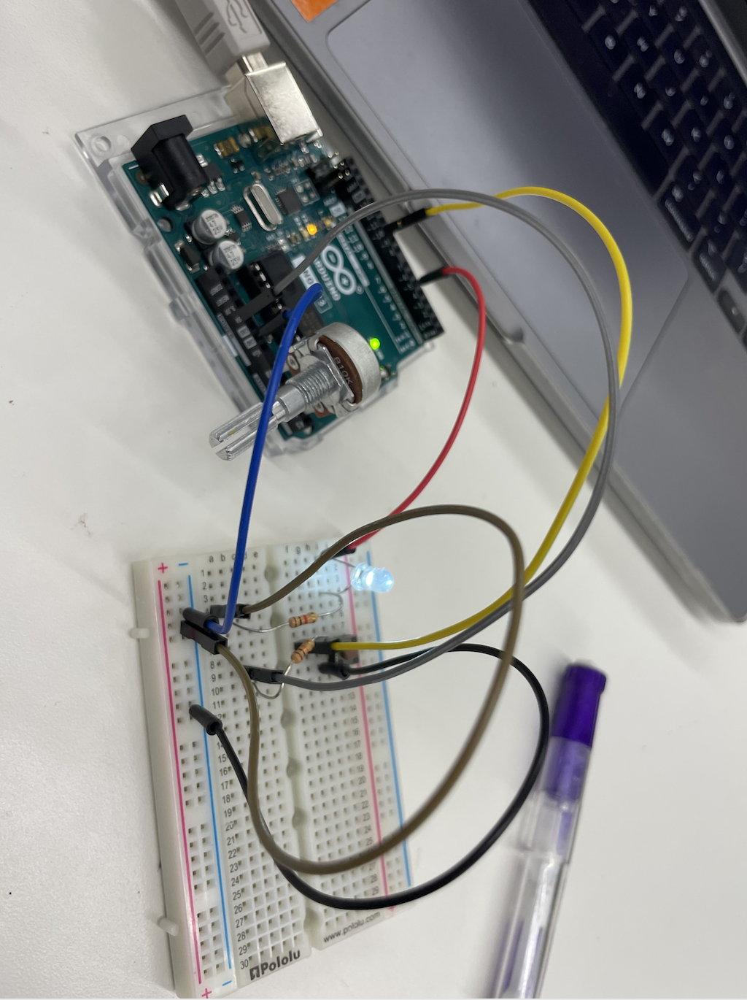
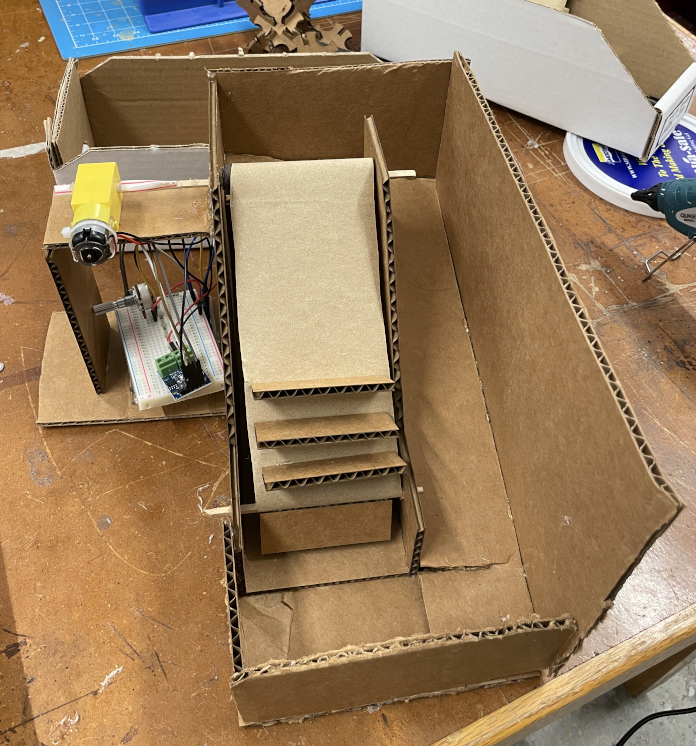
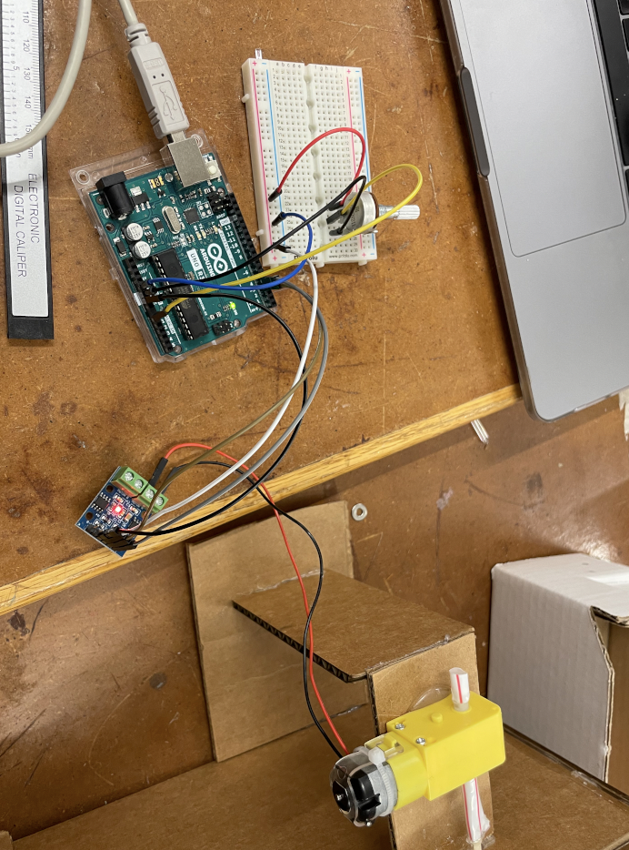
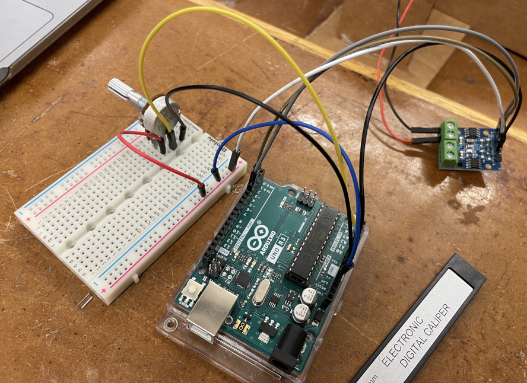
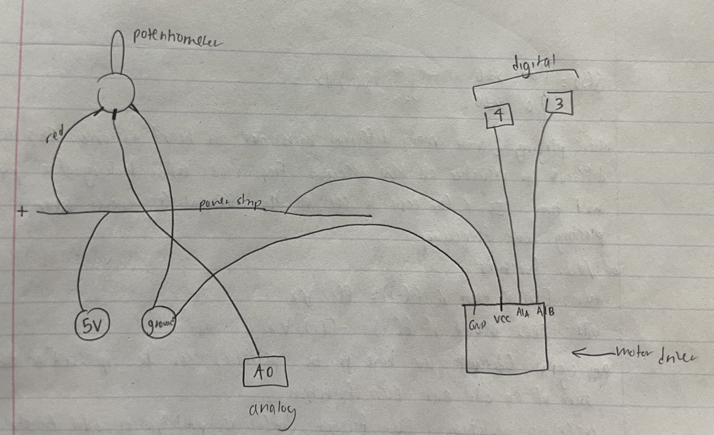
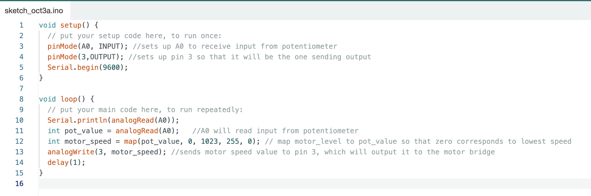

During lab and class this week, I gained more familiarity with circuits. Though I have taken several physics classes on electromagnetism, I still didn't feel like I had much intuitive understanding of how to construct basic circuits in real life, and so it was extremely cool to get to play around with it and see how the abstract theoretical principles that I've learned actually do dictate how the circuit works in real time. I especially liked learning how to build the pull up and pull down resistors using the button. It was very rewarding to see how a relatively simple arrangement of wires and resistors could create a feature that has so many practical implications (for example, in the context of the escalator I've been building for the past two weeks, the button could be implemented to dictate the direction of motion of the motor, thus allowing the user to control whether the escalator goes up or down). Here is the pull up resistor I built: in this image, the lightbulb is on since the button is not being pressed.
In terms of learning to use the Arduino, I have a decent amount of experience with programming, so was able to understand concepts such as for loops and conditionals more easily. Nevertheless, I found it novel and satisfying to be able to see the concrete product of my coding so immediately, in the form of a reaction on the Arduino. For example, I learned how to program the lightbulb to blink on and off at set intervals. I also learned how to get the Arduino to take in input from certain pins, and send outputs to other pins depending on the received inputs. I could see this being useful for my final project, as I will need to build a system that takes in input data from the temperature and light sensors, and outputs a message to the motor to turn in a certain direction, thus flipping the tires.
This week's assignment was to program the Arduino board to control something. I decided to incorporate this into my kinetic sculpture from last week, which worked out well since there were several features of the sculpture that I had not had time to finish last week and hoped to continue working on. My idea for the sculpture was to create a working marble escalator. By the end of last week, I had completed an escalator structure with a belt that could succesfully rotate upwards around the axles. The priority for this week, then, was to add stairs to the belt so that it could actually carry marbles upwards (not to mention look more like a real escalator). Moreover, I had to devise a ramp that would loop around the structure so that the marbles could roll back down to the start.
Adding stairs turned out to be the easy part. I used calipers to measure the width of the belt and the clearance distance between the bottom of the belt and the base of the escalator. I used these parameters to model a rectangle in Fusion (with width equal to the width of the belt and height equal to the clearance distance, so that it would be able to swing through cleanly). Then I printed out 12 of these rectangles on cardboard using the laser cutter (12 seemed to me a sufficient amount to prove that the escalator concept would work). I then glued the rectangles onto the belt by their long edge, forming a series of shelves sticking out orthogonally from the belt. I had to test this a couple times by turning the motor on to ensure that the stairs would be able to rotate all the way around without hitting eachh other or the bottom of the escalator. This step actually went a lot more smoothly than I expected, and the hot glue worked perfectly to hold the stairs in place. I next tested the ability of the stairs to transport small marbles. While the stairs were capable of supporting the weight of the marble, I discovered that the marble would often roll off the side of the stairs and get stuck in between the belt and the wall of the escalator, causing the belt to snag and the whole system to halt. This obviously was not ideal, so I considered the idea of having the escalator transport spools instead, since spools are not round and so can only roll in one direction. This did solve the problem, as the spools would no longer roll off the side. However, precisely due to the spool's one-directional rolling, the spool could not manuever the 180 degree turn necessary to return to the start. This ruined my vision of building a structure that looped upon itself. I momentarily considered the idea of adjusting the sculpture so that it simply carried spools up to a little platform up top; however this seemed to me entirely unsatisfying, and the easy way out of the problem. I resolved to keep trying to build my original idea with marbles. Here is a picture of the escalator at this point of the process, with stairs attached.
Upon further examination, I realized that the rotation of the motor was actually causing the walls of the elevator to push apart slightly, increasing the separation distance between them and thus opening a gap between the belt and the wall. By gluing the walls to a base, I was able to prevent this shifting, and this actually solved the problem of the marbles rolling off the side because there was no longer a gap for them to fall into. Next, I tackled the problem of building a ramp for the marbles to come back down to the start.
An issue I quickly encountered was how to build the ramp in such a way that it would pick up the marble as soon as it rolled off the top stair, but would also not interfere with the ability of the stairs to swing through and down. Through trial and error, I used the box cutter to cut a cardboard support of exactly the right height (measured with a ruler), and then I cut another piece of cardboard of exactly the right width to place on top of this support (perpendicular to the support and parallel to the ground). I was able to position this top cardboard such that it exactly lined up with the arc of the stairs, so there was no gap for the marble to fall into but the stairs also would not hit the cardboard on their way down. This worked very well. I then used the box cutter to cut more pieces of cardboard that would act as the outer walls of the ramp. I glued these in place to the base. Then I cut a narrower piece of cardboard to act as the ramp piece that would be attached to the outside of the wall of the elevator. The more difficult part was figuring out how to get the marbles to turn the sharp, 180 degree turn. I achieved this by cutting a slit in the platform so that I could bend part of the platform down, thus directing marbles in the proper direction. Plus, when I actually tested it out, I discovered that the marbles actually shot out of the top of the escalator with such force that they tended to follow the path of the ramp anyways without much additional manipulation. Here is a video:
I was delighted that this was finally working! Unfortunately, I wasn't able to figure out a way for the marbles to land back on the stairs by themselves so they would automatically restart the cycle. Rather, I have to manually place them back onto the escalator. However, this is just a minor issue, and the bulk of my vision was finally achieved. Now it was time to add an aspect of microcontroller programming.
I decided to incorporate a potentiometer with a dial that would control the speed of my escalator: a higher speed results in an efficient but more jerky and frightening trip for the marble passengers, while a lower speed brings a smoother and more relaxing ride at the cost of swiftness. With this dial, I would be able to adjust the conditions of the marbles' journey. Here is the circuit I created, including an image as well as a rough schematic representation I drew:
  I then had to program the Arduino. Essentially, I want the program to take in as input the reading from the potentiometer, and use that to inform the output it sends to the motor bridge (labeled motor driver, which dictates the motion of the actual motor). This is the code I used:
Now I could use the dial to control the speed of my escalator! See this in action (notice how the escalator slows considerably after I turn the dial):
The marble escalator is complete!
If I had more time to work on this, I would want to keep workshopping the ramp so that the marbles could end up being scooped automatically back onto the stairs. This could probably be achieved either by dropping the marbles off a little higher up, so that they fall back onto the staircase, or by adjusting the shape of the stairs to have more scooping ability. I would also want to keep working on the microcontroller aspect to add a feature similar to what we built in lab: essentially, a button that would change the direction of rotation of the motor so that the escalator could carry the marbles both down and up. Finally, I would be interested in rebuilding the entire structure but incorporating more wood so that it could be sturdier and more long-lasting (as well as look a bit cleaner). However, cardboard was perfect for my purposes this time since it allowed me to make many more easy manual adjustments than I would have been able to do with wood.
Working on this project the past couple weeks showed me how not everything can be modelled out perfectly beforehand--a lot of the construction process (at least for me in this case) involved getting my hands dirty with trial and error. Since I couldn't foresee how all the pieces would work together, it would have been impossible to create an entire working model in Fusion that could have been printed out and assembled in one easy step. Rather, I printed a few crucial parts, and a lot of the rest of the parts were created simply by cutting cardboard with a box cutter to meet the exact specifications I discovered as I went along. This probably resulted in a messier final product, but now that I have built it successfully one time, perhaps I could go back and model the whole thing to be able to build a cleaner version. Another thing I realized in this project is that hot glue is extremely effective, especially when building things by trial and error, but also doesn't look very pleasing aesthetically. If I were to model the whole structure over again in Fusion, I would add more finger joints to eliminate the need for as much hot glue. Overall, however, I am extremely pleased with how this project has turned out, especially because last week it didn't seem like I was going to be able to get it to work.